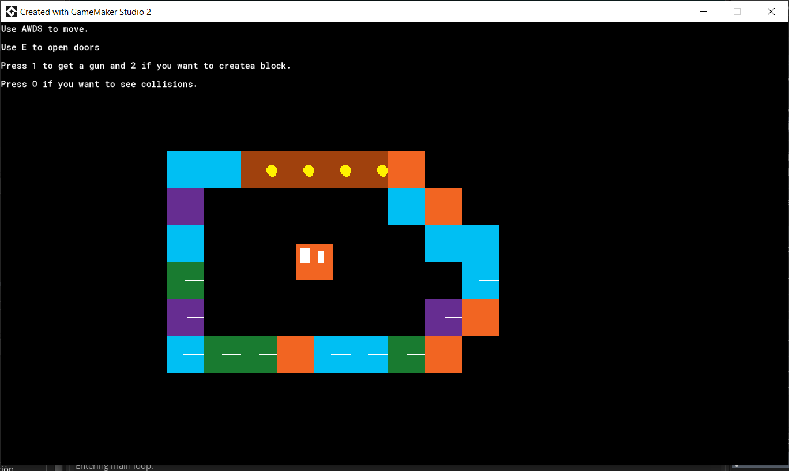
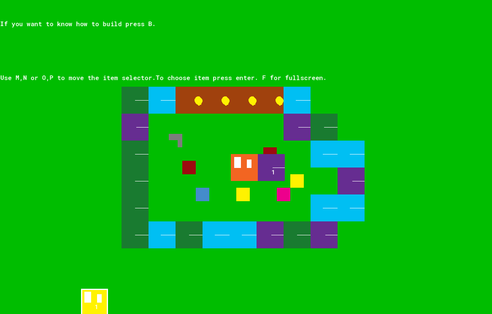

NOTE: If you are the owner of something on the web,(a song, clip, image, etc), contact me immediately so I can take down that content the fastest I can.
Game "Project"
So this isn't really a game or project, that is going to be released, this is more something I will be doing randomly and adding things until I get bored or stuck. Hope you enjoy this train wreck.
Version 1||| 21/11/20

So I basically used the code of HeartBeast for the shooting, movement, and collisions,check his stuff , he has wonderful tutorials for beginners, and he actually knows how to program unlike me.
I also added a super basic construction and a lame door system, but if it works, (I'm starting the project and already cutting corners goddammit). Also, blocks are destructible and have a randomized value that makes them spawn in three types of colors.
So as you can see this is in very early development, I will try to keep you updated inclusively if I do some nerd like optimization. Although knowing this is more for fun I will program vampires and some stupid edgy joke like KKK robots with aids.
Also, if there is any bug hit me up on Discord.
Also sorry for Google drive I don't know how to fix the dowload function.

So I created a very basic inventory and building system(not the creation of objects just blocks).Thanks to the game tester Sampletext/Textbox , who made me released I explain myself like shit. So until I create a tutorial here you go, the update will be like those games you need to discover secrets in and outside the game, but instead of having a cool interconnected story, you get the instructions to as a shitty demo.
Also, this seems kinda buggy, (inclusively if I check and there weren't any bugs I just get the feeling), so hit me up on discord if you notice something.
Still figuring downloads.